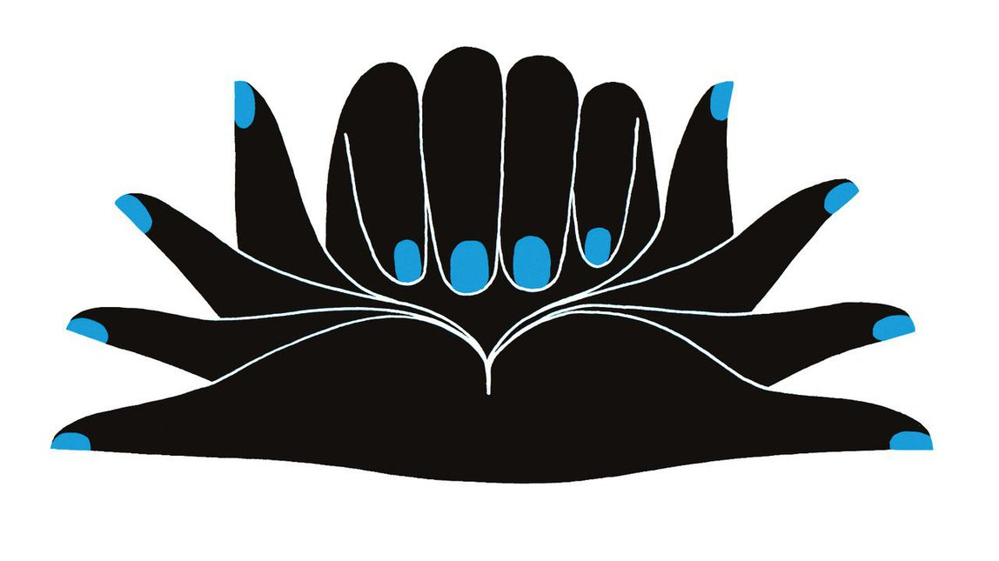

2021-06-18T15:22:40+00:00
Noise pollution
噪音污染
噪音污染
Humans are imperfect, inconsistent decision-makers
人类是不完美、前后不一的决策者
人類是不完美、前後不一的決策者
In their new book, Daniel Kahneman, Olivier Sibony and Cass Sunstein offer strategies for improvement
丹尼尔·卡尼曼、奥利维尔·西博尼和卡斯·桑斯坦在合著的新书中提出了改进策略【《噪音》书评】
丹尼爾·卡尼曼、奧利維爾·西博尼和卡斯·桑斯坦在合著的新書中提出了改進策略【《噪音》書評】
NOISE IS UNWANTED variation in judgments that should be identical, which leads to inaccurate and unfair decisions. It is all around people all the time, though individuals fail to notice it. To get a sense of how it happens, perform a “noise audit” right now: open your phone’s stopwatch app and practice counting ten seconds. Now, with your eyes closed, count several times, hitting the lap button each time you believe ten seconds have elapsed.
本该一模一样的判断中出现了人们不想要的差异，这种差异便是“噪音”（noise），它导向了不准确和不公允的决策。噪音无时不有，尽管个体并不会注意到它。要了解它是如何产生的，不妨现在就来做一次“噪音审计”：打开你手机上的秒表应用，先练习一番，数个10秒。接着闭上眼睛，再数几遍，每次你觉得已经过了10秒，就按停计时器。
本該一模一樣的判斷中出現了人們不想要的差異，這種差異便是“噪音”（noise），它導向了不準確和不公允的決策。噪音無時不有，儘管個體並不會注意到它。要了解它是如何產生的，不妨現在就來做一次“噪音審計”：打開你手機上的秒錶應用，先練習一番，數個10秒。接着閉上眼睛，再數幾遍，每次你覺得已經過了10秒，就按停計時器。
Your answers weren’t perfect but noisy: slightly above or below the ten-second mark. And if they were consistently wrong in one direction, then there is bias too, which is a different form of error (you counted too quickly or slowly).
你每次计数的结果并不是正正好好，而是有噪音的：不是比10秒稍长些，就是略短了点。如果它们始终都往一个方向上错，那就说明还存在偏误，这就是另一种形式的错误了（你数得太快或太慢了）。
你每次計數的結果並不是正正好好，而是有噪音的：不是比10秒稍長些，就是略短了點。如果它們始終都往一個方向上錯，那就說明還存在偏誤，這就是另一種形式的錯誤了（你數得太快或太慢了）。
The problem of bias in decisions is well known and there are strategies that people can adopt to minimise it. For example, customers may be “anchored” on the first price they are presented with in a transaction, so they learn to consciously discard it before they negotiate. But noise is different precisely because it is less apparent. “It becomes visible only when we think statistically about an ensemble of similar judgments. Indeed, it then becomes hard to miss,” Daniel Kahneman, Olivier Sibony and Cass Sunstein write in their new book.
决策时会出现偏误的问题众所周知，人们可以采取一些策略来尽量减小它。例如，在交易中，客户可能会“锚定”在对方给出的第一个报价上，因此他们学会了要在谈判之前有意识地无视这个价格。但噪音之所以不同，恰恰是因为它不是那么明显。“只有当我们从统计学的角度综合考量一系列相似的判断时，噪音才变得明显起来。事实上，这之后你想不看到它们都难。”丹尼尔·卡尼曼（Daniel Kahneman）、奥利维尔·西博尼（Olivier Sibony）和卡斯·桑斯坦（Cass Sunstein）在他们的新书中写道。
決策時會出現偏誤的問題眾所周知，人們可以採取一些策略來盡量減小它。例如，在交易中，客戶可能會“錨定”在對方給出的第一個報價上，因此他們學會了要在談判之前有意識地無視這個價格。但噪音之所以不同，恰恰是因為它不是那麼明顯。“只有當我們從統計學的角度綜合考量一系列相似的判斷時，噪音才變得明顯起來。事實上，這之後你想不看到它們都難。”丹尼爾·卡尼曼（Daniel Kahneman）、奧利維爾·西博尼（Olivier Sibony）和卡斯·桑斯坦（Cass Sunstein）在他們的新書中寫道。
The divergences are stark. In a courthouse in Miami, one judge would grant refugees asylum in 88% of cases while another would do so 5% of the time. A large study of radiologists found that the false-positive rate ranged from 1% to 64%, meaning that two-thirds of the time, a radiologist said a mammogram showed cancer when it was not cancerous. Doctors are more likely to prescribe opioids at the end of a long day. Judges made harsher decisions leading up to their breaks and on hotter days. An insurance firm’s underwriters assessed premiums that varied by 55%, a difference that was five times greater than its management had imagined.
分歧十分显著。在迈阿密的一家法院，一名法官裁定给予难民庇护的几率是88%，另一名法官是5%。一项针对放射科医生的大规模研究发现假阳性率在1%至64%之间——64%这个数字意味着当某位放射科医生说乳房X光片显示癌症时，有三分之二的机会都不是。医生更有可能在一天的辛苦工作快结束时开出阿片类药物。法官在临近休假和天气较热时会做出更严厉的判决。在一家保险公司，不同承保人评估的保费相差55%，是公司管理层预期数字的五倍。
分歧十分顯著。在邁阿密的一家法院，一名法官裁定給予難民庇護的幾率是88%，另一名法官是5%。一項針對放射科醫生的大規模研究發現假陽性率在1%至64%之間——64%這個數字意味着當某位放射科醫生說乳房X光片顯示癌症時，有三分之二的機會都不是。醫生更有可能在一天的辛苦工作快結束時開出阿片類藥物。法官在臨近休假和天氣較熱時會做出更嚴厲的判決。在一家保險公司，不同承保人評估的保費相差55%，是公司管理層預期數字的五倍。
Not only do individuals differ with their peers, they often fail to agree with themselves. Wine experts tasting the same samples for a second time scored fewer than one in five identically. Four out of five fingerprint examiners altered their original identification decision when presented with contextual information that should not have been a factor in matching prints. In one medical study, assessing angiograms, physicians disagreed with their earlier judgments more than half the time.
个人不光会与同侪不一致，还常常“自己打脸”。葡萄酒专家在第二次品尝相同的酒样时给出与之前完全相同的评分的几率还不到五分之一。向指纹鉴定人员提供背景信息后，有五分之四的人改变了自己最初的鉴定决定，而这些信息本不应成为匹配指纹时该考虑的因素。一项评估血管造影照片的医学研究发现，医生们下的判断与先前不符的情况占到一半以上。
個人不光會與同儕不一致，還常常“自己打臉”。葡萄酒專家在第二次品嘗相同的酒樣時給出與之前完全相同的評分的幾率還不到五分之一。向指紋鑒定人員提供背景信息後，有五分之四的人改變了自己最初的鑒定決定，而這些信息本不應成為匹配指紋時該考慮的因素。一項評估血管造影照片的醫學研究發現，醫生們下的判斷與先前不符的情況佔到一半以上。
Noise is sometimes good. When different investors size up a trade or book reviewers reach different assessments, the diversity of opinion is beneficial. But more commonly it creates problems. In law noise means unfairness. In business it can be costly.
有时有噪音是好事。当书评人或考量某个行业的各路投资者得出了相异的评估结果，这样的多样性观点是有益的。但噪音还是带来问题的情况居多。在法律上，噪音意味着不公平。在商业中，噪音可能造成高昂的代价。
有時有噪音是好事。當書評人或考量某個行業的各路投資者得出了相異的評估結果，這樣的多樣性觀點是有益的。但噪音還是帶來問題的情況居多。在法律上，噪音意味着不公平。在商業中，噪音可能造成高昂的代價。
Yet it can be reduced. The authors’ remedies include a “noise audit” to measure the degree of disagreement on the same cases, to quantify the variation that is usually invisible. They also call for better “decision hygiene” such as designating an observer for group decisions, to prevent common biases and noisy judgments. For example, they can ensure that participants in a team reach independent assessments before coming together as a group to aggregate their decisions.
不过噪音是可以减少的。三位作者给出了一些解决办法，其中包括“噪音审计”，用以衡量人们就同一案例得出的判断的差异程度，将人们通常看不出来的变化量化出来。他们还呼吁改善“决策卫生”，比如在做群体决策时指定一名观察员，以防出现常见的偏误和有噪音的判断。例如，观察员可以确保团队中的参与者先分别做出评估，然后再作为一个团队将各自的决策整合起来。
不過噪音是可以減少的。三位作者給出了一些解決辦法，其中包括“噪音審計”，用以衡量人們就同一案例得出的判斷的差異程度，將人們通常看不出來的變化量化出來。他們還呼籲改善“決策衛生”，比如在做群體決策時指定一名觀察員，以防出現常見的偏誤和有噪音的判斷。例如，觀察員可以確保團隊中的參與者先分別做出評估，然後再作為一個團隊將各自的決策整合起來。
Another solution is to dispense with people altogether. Statistical models, pre-determined rules and algorithms in many cases are more accurate than human judgment. The authors welcome artificial intelligence to make many decisions in society, but acknowledge that people are predisposed to resisting their answers, for lack of the personal, emotional quality in decision-making—even if it leads to inferior, or at least variable, decisions.
另一个解决办法是干脆不让人参与。统计模型、预设规则和算法在很多情况下都比人类的判断更准确。三位作者乐见人工智能在社会中参与制定许多决策，但也承认它们给出的方案很容易遭到人们的抵触，因为这样的决策过程缺乏人情和温度——即使这些因素会导致做出低质或至少变化不定的决策。
另一個解決辦法是乾脆不讓人參與。統計模型、預設規則和算法在很多情況下都比人類的判斷更準確。三位作者樂見人工智能在社會中參與制定許多決策，但也承認它們給出的方案很容易遭到人們的抵觸，因為這樣的決策過程缺乏人情和溫度——即使這些因素會導致做出低質或至少變化不定的決策。
The trio speaks with credibility. Mr Kahneman is a Nobel laureate whose ideas on bias in human reasoning have reshaped economics and society; Mr Sunstein is a polymath scholar at Harvard and occasional government official putting his ideas into policy; Mr Sibony is a former McKinsey partner who teaches decision science at a French business school. Yet despite the book’s title, the authors struggled to extract the signal from the noise, so to speak, needing some 400 pages to make their case. A tighter argument would have enhanced the ideas they present. ■
三位作者的话颇具可信度。卡尼曼是诺贝尔奖获得者，他关于人在推理时会出现偏误的观点重塑了经济和社会；桑斯坦是哈佛大学一名博学多才的学者，间或在政府部门任职，将自己的想法付诸实际政策；西博尼曾是麦肯锡的合伙人，如今在一所法国商学院教授决策科学。不过，尽管该书以噪音为题，作者们自己要从噪音中提取出信号还是有些费力——乃至要花400来页来说明白。如果论证能更紧凑些，他们提出的观点会更有力。
三位作者的話頗具可信度。卡尼曼是諾貝爾獎獲得者，他關於人在推理時會出現偏誤的觀點重塑了經濟和社會；桑斯坦是哈佛大學一名博學多才的學者，間或在政府部門任職，將自己的想法付諸實際政策；西博尼曾是麥肯錫的合伙人，如今在一所法國商學院教授決策科學。不過，儘管該書以噪音為題，作者們自己要從噪音中提取出信號還是有些費力——乃至要花400來頁來說明白。如果論證能更緊湊些，他們提出的觀點會更有力。